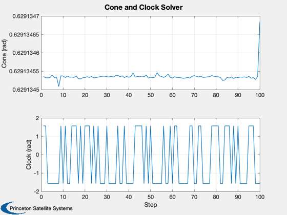

Test a nonlinear equation solver for computing cone and clock.
The input is the costate vector and optical properties.
Functions demonstrated:
LambdaToConeClock3D
Since version 7.
----------------------------------------------------------------------
See also Cone, Constant, Plot2D, RVFromKepler, RVToMEq,
LambdaToConeClock3D
------------------------------------------------------------------------
aU = Constant('au');
d.mu = Constant('mu sun');
d.rhoS = 0.98;
d.rhoR = 0.1;
d.rhoAD = 0.00001;
d.accel = 1e-6*aU^2;
[r, v] = RVFromKepler([aU 0 0 0 0 0], [], d.mu );
n = size(r,2);
x = zeros(12,n);
for k = 1:n
x(1:6,k) = RVToMEq( r(:,k), v(:,k), d.mu );
x(7:12,k) = 20*(rand(6,1)-0.5);
end
[a, cone, clock] = LambdaToConeClock3D( x, 'equinoctial', d );
yL = {'Cone (rad)' 'Clock (rad)'};
Plot2D( 1:n, [cone; clock], 'Step', yL, 'Cone and Clock Solver')
